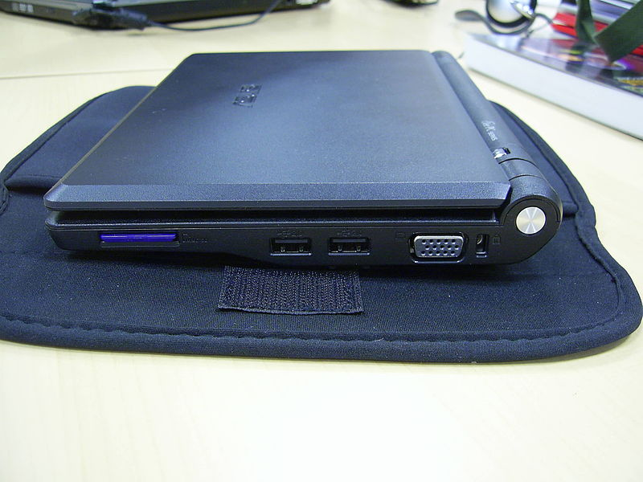

Bat country. Had to recompile ruby gem. Apologies.
Who am I?
john.fink@gmail.com
twitter: @adr
g+: http://gplus.to/jbfink
https://github.com/jbfink
blah blah blah. Do the interrupt me/who are you dance.
Why embedded hardware?
- Cheap!
- Functional!
- Fun!
...
A recent explosion of cheap(ish) hw
- pandaboard / beagleboard / beagleboard XM
- various TI dev boards
- BASIC stamp
- Usually open-ish.
BASIC stamp not so recent. Note that most/all of these boards have cheap / easy / free / cross-platform programming tools
Correlative? Causative?
- Hackerspaces and DIY ethics
Cheap hardware + interested people == projects == hackerspaces. Plug Thinkhaus a bit.
Arduino
- From 2005
- Made for design projects initially
Hardware
- ATMega chips (328, mostly)
- USB (data and power)
- Lots of IO (digital/analog)
- ~$25-$30 from Digikey

Show board (if you haven't already). Talk about analog ins and PWMs and whatever else. Pass board around.
Software
- Programmed with a simple IDE
- setup() and loop() mandatory

Open Hardware
- Chip is non-proprietary
- Schematics are open...
- ...so there are lots of clones
- Name is trademarked.
This is intentional. Jillion billion clones, yet Arduino still in business, still makes money. Show your clone if you brought it. Note that Arduinos are around $25-$30 from digikey.
People have built...
- Keyless door entries!
- EMF detectors!
- Solar tracking stations!
- Satellites!
- Auto-watering gardens!
- Xylophones!
SO MANY THINGS.
Raspberry Pi
- UK educational charity initiative
- Went through many board formats
- ~$35
ask if anyone knows what this. Mention Model B and Model A and how creators of RPi are trying purposefully to ape the UK's educational computing history, etc.
The Hardware
- 700mhz ARM6
- Broadcom VideoCore IV
- 256MB memory (shared with GPU)
Ports on Model B
- HDMI
- 2 USB
- 10/100 Ethernet
- Composite out
- Audio out
- Micro USB for power
..more ports!
- SD slot
- Lots of GPIO pins
- Camera/LCD headers

The Software
Firmware on SD card
- Can adjust system/GPU ram at boot
- Makes it hard (impossible?) to brick
Operating systems
- Linux variants
- RISC OS
- Android (4.0)
not Ubuntu, the ARM architecture is too old. But Fedora/Debian/Raspbian/Arch. Maybe others. Note specific Linux variants, mostly HTPC related (raspmc, elec-whatever). Note that in educational contexts the language of choice is usually Python.
The Future?
Raspberry Pi clones?

eee 700. Who has one of these? EXPLOSION, then retraction, of formats after successful launch.
Arduino Due?
Arduino on steroids, on a 32bit ARM. Lots of Arduino-alikes that do this now, but an "official" Arduino could lead to huge developments in this space.
FPGAs?
"Field Programmable Gate Array". No idea what this is really. I'm putting this in here because I hope you know what it is. Do you?